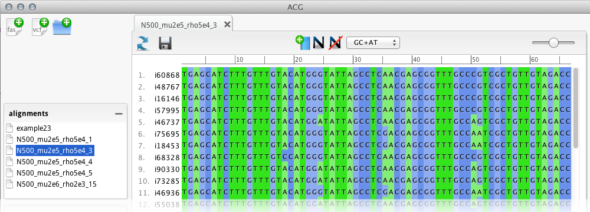
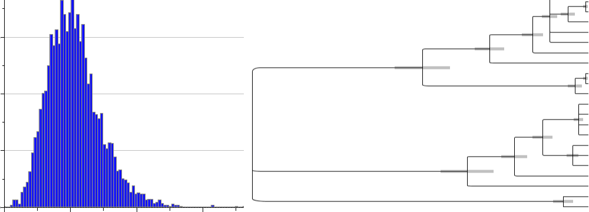

-

- 
- 
Visualize the complex
history of your data
ACG is a tool to infer population history from an alignment of nucleotide sequences. Using ACG, you reconstruct how population size has changed over time, where recombination breakpoints are along the sequences and in time, what the shape of the genealogy looks like, when the most recent common ancestor occurred, and many other properties of the samples.
Features
- Easily edit, manipulate, and visualize large alignments
- Estimate time to most recent common ancestor, genealogical structure, recombination breakpoints, and many more aspects of the alignment.
- Import alignments directly from next-generation sequencing output
- Save and store all results and images
- Quickly queue and manage multiple runs
- High performance using multi CPUs